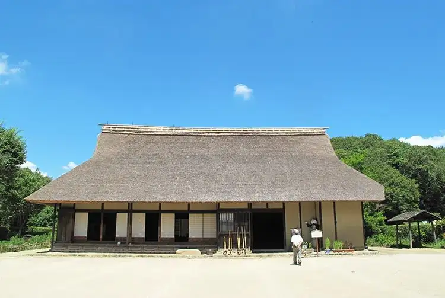

Japan / Tokyo / Musashimurayama
Musashimurayama, Tokyo: things to do, food and stays
Musashimurayama · Tokyo
Musashimurayama
Highlighted on the Tokyo map.

Sights
Dining
Murayama Mangetsu Udon
村山 満月うどん

Noodle restaurant in Musashimurayama, Tokyo.
Nikujiru Udon Nagashima Ya
肉汁うどん長嶋屋

Noodle restaurant in Musashimurayama, Tokyo.
Warai No San
笑乃讃

Noodle restaurant in Musashimurayama, Tokyo.
Murayama Hope Ken Honten
村山ホープ軒 本店

Noodle restaurant in Musashimurayama, Tokyo.
Ice Kobo Verde
アイス工房ヴェルデ

Sweets and bakery shop in Musashimurayama, Tokyo.
Musashimurayama Taishoken
武蔵村山 大勝軒

Noodle restaurant in Musashimurayama, Tokyo.
Amano Ya Toukyou koujou chokubai ten
天乃屋 東京工場直売店

Sweets and bakery shop in Musashimurayama, Tokyo.
Nikujiru Udon Aoyagi
肉汁うどん青柳

Noodle restaurant in Musashimurayama, Tokyo.
Harada Seimen
はらだ製麺

Noodle restaurant in Musashimurayama, Tokyo.
Tianjin En
天津園

Noodle restaurant in Musashimurayama, Tokyo.
Ramen Hifumi
ラーメン一二三

Noodle restaurant in Musashimurayama, Tokyo.
Sai
菜

Chinese or Asian restaurant in Musashimurayama, Tokyo.
Tempura Ichidai Ionmoru musashimurayama ten
天ぷら一代 イオンモールむさし村山店

Seafood restaurant in Musashimurayama, Tokyo.
Guangzhou Ichiba Ionmoru musashimurayama ten
広州市場 イオンモールむさし村山店

Noodle restaurant in Musashimurayama, Tokyo.
Morino Komugi
もりのこむぎ

Sweets and bakery shop in Musashimurayama, Tokyo.
Rin Ya Ionmoru musashimurayama ten
凛や イオンモールむさし村山店

Noodle restaurant in Musashimurayama, Tokyo.
Chinese Wakamatsu
中華料理わかまつ

Noodle restaurant in Musashimurayama, Tokyo.
Kyurin Ion mall musashimurayama
久臨 イオンモールむさし村山

Noodle restaurant in Musashimurayama, Tokyo.
Osaka Sanuki Tsurumaru Udon Honpo Musashimurayama ten
大阪讃岐 鶴丸うどん本舗 武蔵村山店

Noodle restaurant in Musashimurayama, Tokyo.
Heart Bread ANTIQUE Ionmoru musashimurayama ten
ハート ブレッド アンティーク イオンモールむさし村山店

Sweets and bakery shop in Musashimurayama, Tokyo.
Inakaya
田舍屋

Noodle restaurant in Musashimurayama, Tokyo.
NINA'S PARIS Musashimurayama
ニナスパリ むさし村山

Cafe in Musashimurayama, Tokyo.
Irisei
入清

Noodle restaurant in Musashimurayama, Tokyo.
torimaru shokudou × tanita kafe Ionmoru musashimurayama ten
鳥〇食堂×タニタカフェ イオンモールむさし村山店

Japanese restaurant in Musashimurayama, Tokyo.
Ramen Kairikiya Ion mall musashimurayama ten
ラーメン魁力屋 イオンモールむさし村山店

Noodle restaurant in Musashimurayama, Tokyo.
Chateau Yogashi Ten
シャトー洋菓子店

Sweets and bakery shop in Musashimurayama, Tokyo.
Genroku
元六

Noodle restaurant in Musashimurayama, Tokyo.
Ogawa Ya Musashimurayama ten
小川家 武蔵村山店

Noodle restaurant in Musashimurayama, Tokyo.
PASTA Rejjano Ion mall musashimurayama ten
ＰＡＳＴＡレッジャーノ イオンモールむさし村山店

European restaurant in Musashimurayama, Tokyo.
Horai
宝来

Noodle restaurant in Musashimurayama, Tokyo.
Yamazaki
山ざき

Noodle restaurant in Musashimurayama, Tokyo.
Kikuyoshi Ion mall musashimurayama ten
キ久好 イオンモールむさし村山店

Japanese restaurant in Musashimurayama, Tokyo.
Saryo Kikusui Musashimurayama ten
茶寮キクスイ むさし村山店

Cafe in Musashimurayama, Tokyo.
Teppan Yaki Tomoiro tomoiro Reservation
鉄板焼とも彩 tomoiro

Meat restaurant in Musashimurayama, Tokyo.
Beijing
北京

Chinese or Asian restaurant in Musashimurayama, Tokyo.
Shokyu
昌久

Noodle restaurant in Musashimurayama, Tokyo.